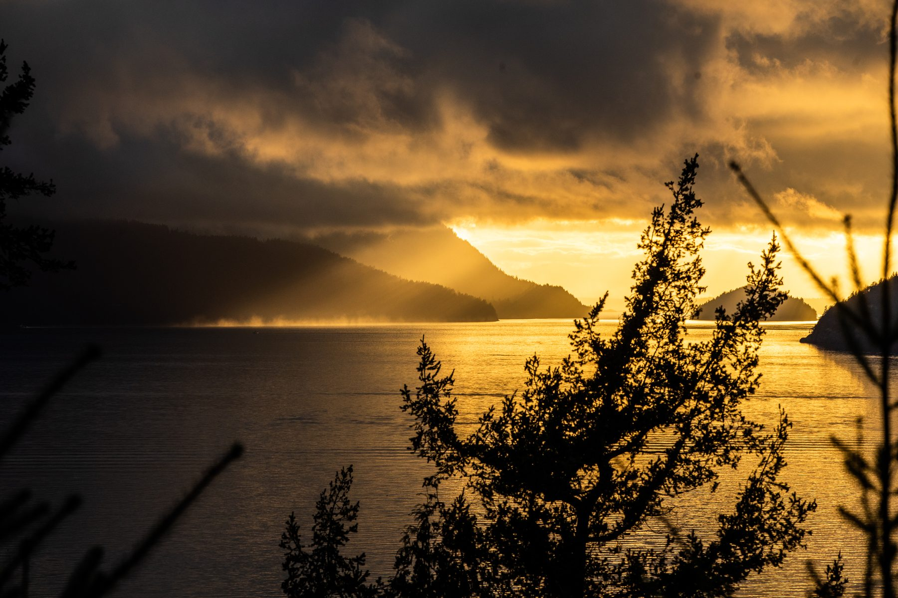

Ask anyone who lives in Squamish where they go to watch the sun go down and a surprising number will say the same thing: out on the water. Howe Sound is a fjord, which means steep mountain walls on both sides, long reflections and light that bounces between the ridges in a way you just don't get on land.
Why the Sound looks so good at sunset
Howe Sound runs roughly north to south, so in the evening the sun drops behind the mountains on the west side of the fjord. That does two things. First, the western ridges turn into dark silhouettes. Second, the sky and the water light up in front of them. On a day with broken cloud, you get gold, copper and pink bouncing back off the surface in every direction.
From a boat you also get something a viewpoint can't give you: movement. You can slide across the water to line up a headland, an island or a snow-dusted peak exactly the way you want it.
When to go
- Summer: long evenings and warm air. Sunset is late, so book a trip that starts in the late afternoon and wraps up as the colour fades.
- Fall: our favourite season for drama. Clearing storms, fresh snow on the peaks and clouds that catch the light. It cools off quickly once the sun is down, so dress warmly.
- Winter: sunset happens early, which makes it easy to fit in before dinner. The air is crisp and the water is often glassy.
- Spring: changeable weather and lots of wildlife. Watch the forecast and keep your plans flexible.
A few clouds are better than a clear sky. Clear days can look flat; clouds are what catch and scatter the light.
What you'll see
Besides the sky, the Sound itself is full of things worth looking at in the evening: harbour seals resting on rocks, bald eagles perched in tall snags, and the outline of Anvil Island and its neighbours against the glow. Around the Squamish end you can pick out the Stawamus Chief and the long ridge of the Tantalus Range when the weather is clear. For more, see our Howe Sound wildlife guide.


How to plan your evening
- Check the forecast and the marine wind. Calm evenings are best. We'll tell you honestly if conditions are going to make for a rough or uncomfortable trip.
- Pick your departure point. Leaving from Porteau Cove puts you closer to the islands and saves about 20 minutes of driving from Vancouver.
- Choose a trip length. The Howe Sound Wildlife Tour runs 2-3 hours, and the Half-Day Explorer runs 4-5 hours if you want more time for stops.
- Pack for later than you think. It gets cold on the water as soon as the sun is gone. See what to bring on a Howe Sound boat trip.
A note for photographers
If you're bringing a camera, we've written a separate guide: how to photograph Howe Sound from a boat. The short version: shoot in the 45 minutes before sunset, keep a lens cloth handy and don't be afraid to under-expose a little to keep the colour in the sky.
Make it an occasion
Sunset trips are a popular choice for proposals, anniversaries and birthdays. If that's you, take a look at private boat tours for special occasions.
Frequently Asked Questions
What is the best time of year for a sunset boat trip on Howe Sound?
Sunsets are good year-round, but late summer and early fall often give the most colour because of clearing weather and low sun angles. Winter sunsets come early, so you can finish in time for dinner.
How long before sunset should we leave the dock?
Plan to be on the water at least an hour before sunset. The best light often arrives 30 to 45 minutes before the sun drops behind the mountains, and the afterglow can last just as long.
Can I book a private sunset trip?
Yes. We run private charters, so you can choose the timing and route. Call or message us with your date and group size and we'll work out what's possible with the tides, weather and daylight.
Plan Your Howe Sound Trip
A local captain, a private boat and the best of the fjord. Call (604) 849-8898 or get in touch to check dates.